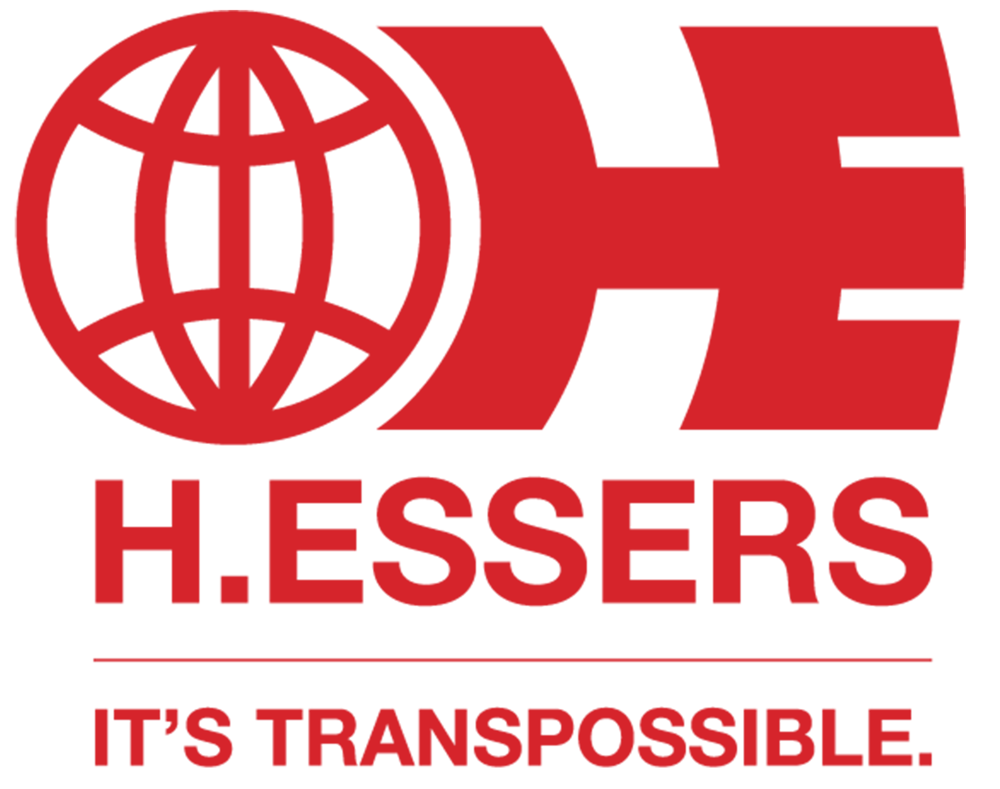
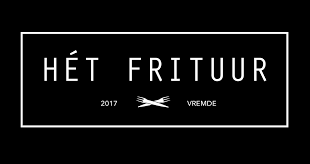

Officer Warehouse (Studentenjob) — H.Essers
Focus: Logistieke administratie & transportdocumentatie.
- Nauwkeurig opmaken van transportdocumenten.
- Ondersteuning van het administratieve warehouse-proces.

Focus: Logistieke administratie & transportdocumentatie.

Focus: Operationele ondersteuning & klantenservice.